A handheld scanner that detects spoilage gases and bacteria to give instant food safety results — helping people identify what is still safe to eat, and cutting waste in the process.
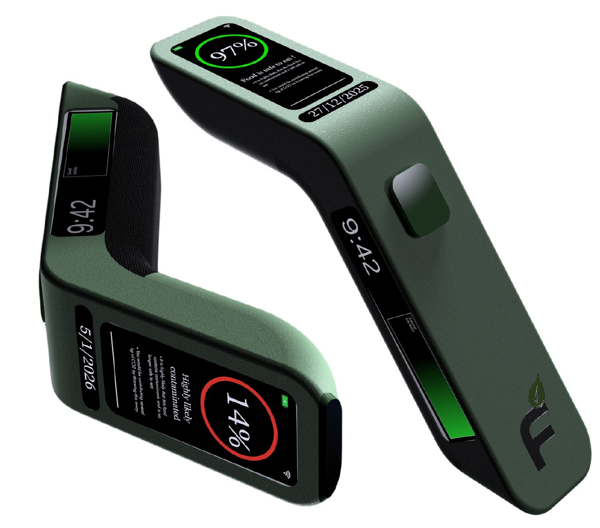
Around a third of all food produced globally is wasted, consuming valuable resources and contributing up to 10% of greenhouse gas emissions. Consumers often lack clear information about whether food is still safe to eat, which leads to unnecessary waste.
of food wasted in the UK every year.
the estimated value of food UK households throw away each year.
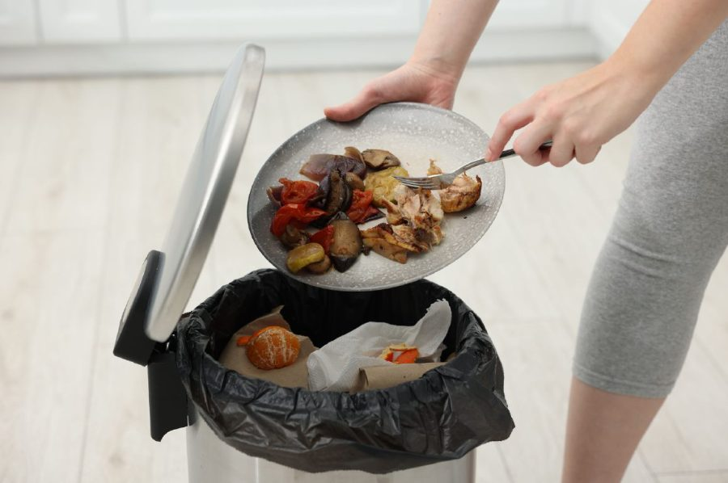
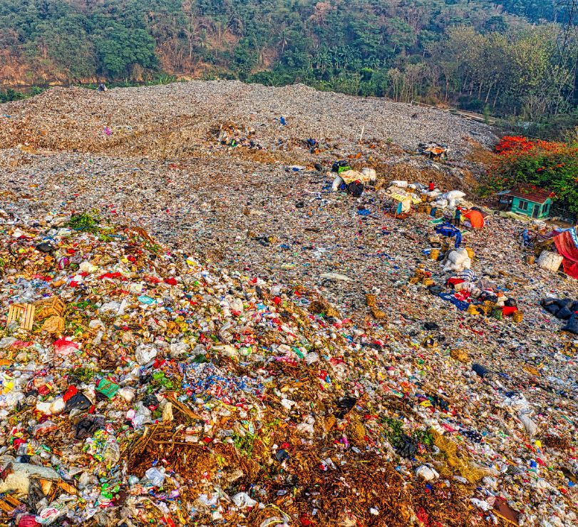
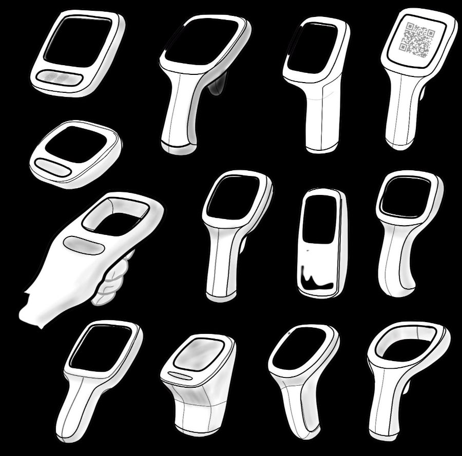
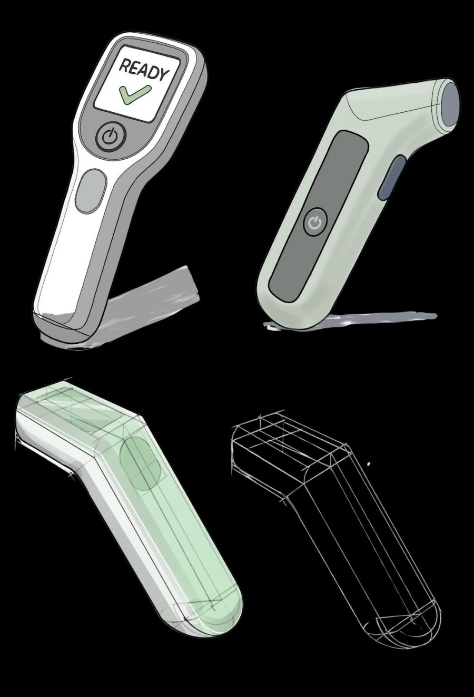
When the user is unsure whether their leftovers are safe to eat, they scan them with Fresha for an instant result. A green light means the food is safe, rewards them with points, and prevents another unnecessary bin trip.
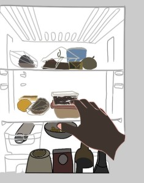
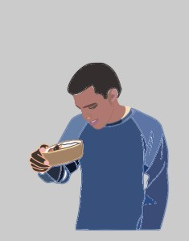
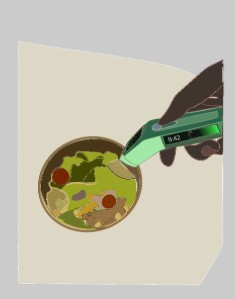
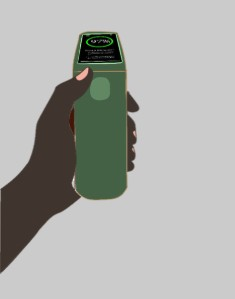
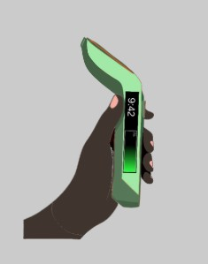
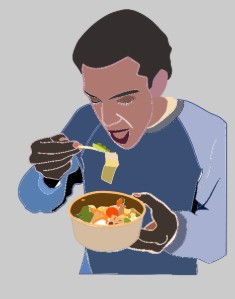
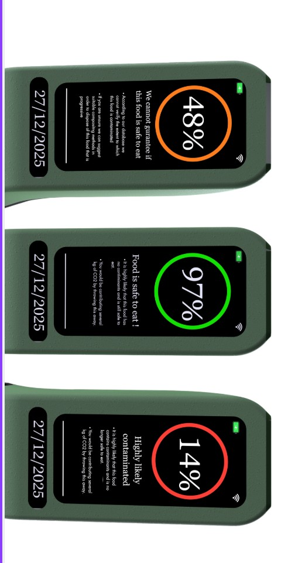
Safe to eat. Green ring, points added, and the CO₂ the user avoided by not binning it.
Uncertain. The database cannot verify the extent of contamination, so the device says so rather than guessing.
Highly likely contaminated. Red ring, with composting suggested instead of the bin.
A one-handed body with a fold-out stand, a clear READY state, and a sensor head that sits close to the food without touching it. The result reads at a glance so the decision takes a second, not a sniff test.
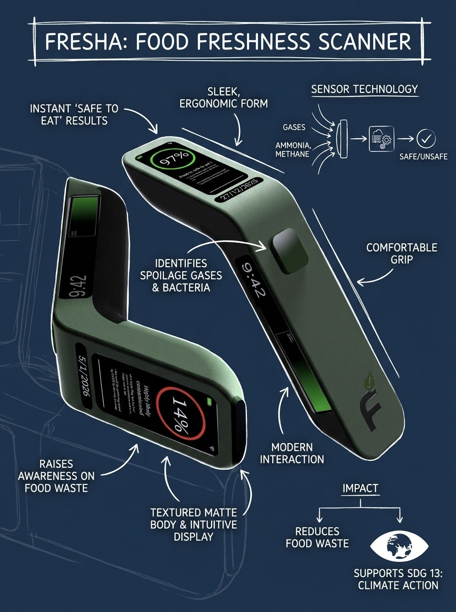